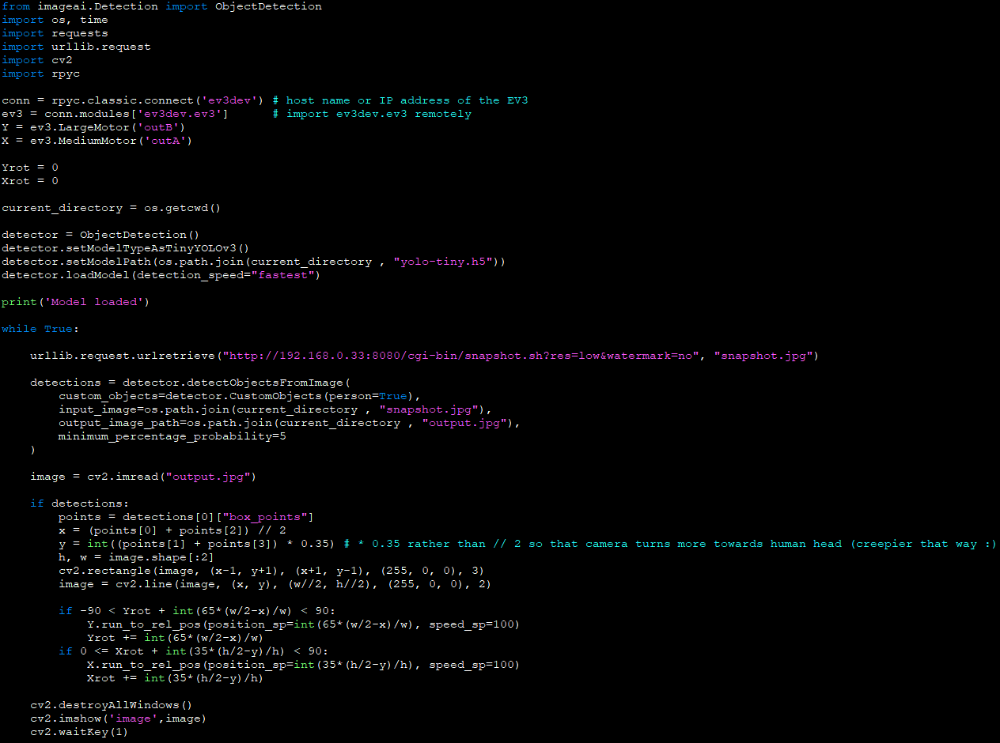

This project, although cool, was intended to be a POC, proving to myself it was possible for data from the camera to meaningfully influence the rotation of the EV3 motors.
I will definitely develop this idea futher, but for now, I'll explain what the robot does:
I'm using imageai's object detector to detect any humans in the frame of the camera. The centre of the human location box is calculated and the displacement is calculated
between this location and the centre of the camera.
The magnitude of rotation then applied to the yaw axis motor is directly proportional to the magnitude of the x-component of this displacement vector, and the direction of rotation is the
direction of the x-component of the displacement vector.
The pitch axis motor isn't really neccessary, but it acts the same as the yaw axis motor, except using the y-component of the displacement vector.
I included limits to the degrees of rotation the motors can turn, because otherwise they could potentially tangle the wires and grind if they get stuck.
Click the code below to download the python file (and the model used by imageai for the human detection):

The camera I'm using with the EV3
To save me explaining for each EV3 project I use a camera for, I'll explain here.
I'm using a "hacked" YI-home camera, as this allows the camera to stream live footage onto a local server, from which I can grab images with python.
To do this, I followed a tutorial here.